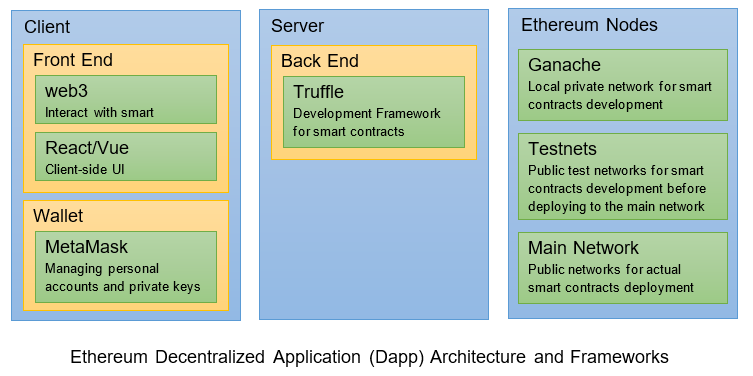
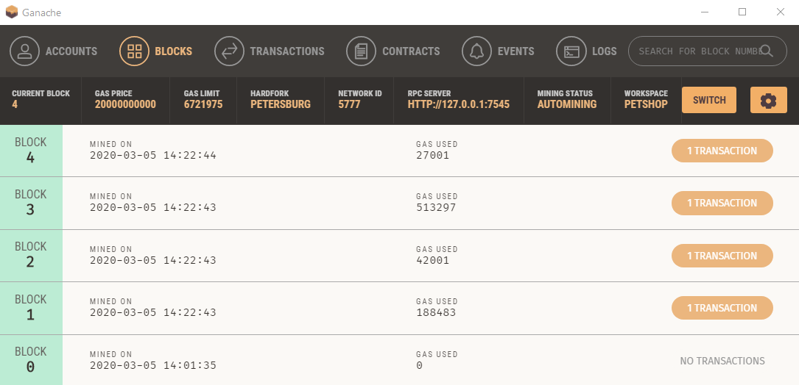

To program Ethereum blockchain, you need to be familiar with JavaScript and full-stack web development under Node.js.
Introduction to Blockchain Technology [TODO]
A blockchain is a distributed digital ledger of transactions. It contains records of all transactions or events that have been executed, which are shared across the nodes participating in the blockchain.
A blockchain is segregated into blocks. Each block contains encrypted data on the transaction, sender/receiver, and the previous block's hash. The block is then appended to the chain in chronological order, hence, the name blockchain.
Blockchain is immutable and trusted ...
Blockchain is distributed, peer-to-peer, decentralized, not controlled by an single party, no intermediary to verify.
Consensus algorithms
Proof of Work (PoW)
"Proof of work (PoW) is a form of cryptographic proof in which one party (the prover) proves to others (the verifiers) that a certain amount of a specific computational effort has been expended. Verifiers can subsequently confirm this expenditure with minimal effort on their part."
PoW was popularized by Bitcoin as a foundation for consensus in a permissionless decentralized network. To create new block, it will require miners to compete to solve a mathematical puzzle which requires a lot of computational power. The first node who solves the puzzle gets to mine the next block.
Proof of Stake (PoS)
PoS is based on the number of blocks owned by the node. Validators use some of their own coins as stakes. Validators will validate blocks by placing a bet on it if they discover a block which they think can be added to the chain. To entice the validators, rewards are given based on their bet. As their bet increases so will their reward. In the end, a validator is chosen to generate a new block based on their economic stake in the network.
Proof of Authority (PoA)
Some nodes (or moderators) are given the authority to validate transaction.
"Proof of authority (PoA) is an algorithm used with blockchains that delivers comparatively fast transactions through a consensus mechanism based on identity as a stake. The most notable platforms using PoA are VeChain, Bitgert, Palm Network and Xodex."
Comparison
| Proof of Work (PoW) e.g., Bitcoin |
Proof of Stake (PoS) e.g., Ethereum |
Proof of Authority (PoA) |
|---|---|---|
|
|
|
History of Blockchain
In November 1, 2008, Satoshi Nakamoto, who remains anonymous to-date, published the famous "Bitcoin White Paper" (https://bitcoin.org/bitcoin.pdf) and created the cryptocurrency Bitcoin.
Building Smart Contract in Ethereum Blockchain by Examples
References:
- Ethereum @ https://ethereum.org/.
- Truffle Boxes - The easier way to get started @ https://www.trufflesuite.com/boxes.
What is Ethereum Blockchain? [Work In Progress]
There are several blockchain platforms that allow developers to create and execute smart contracts. Ethereum (@ https://ethereum.org/) is a global, open-source platform for decentralized applications (dapps). Launched in 2015, Ethereum is among the leading programmable blockchains that you can use it to build new blockchain applications, such as cryptocurrency wallets, financial applications, decentralized markets, and games. Like other blockchains, Ethereum has a native cryptocurrency called Ether (ETH), similar to Bitcoin.
Ethereum consists of:
- Ethereum Virtual Machine (EVM): essentially a state machine that allows you to execute codes.
- Solidity: a programming language build on top of the EVM for writing smart contracts, to send and receive digital tokens and store states.
- Gas: On the Ethereum blockchain, each smart contract is processed by one miner and the resultant block is added to the blockchain. Miners must be rewarded for their efforts, so executing any smart contract on the EVM requires a payment called gas. You need to specify the amount of gas you want to spend for executing any smart contract you create.
To transact on Ethereum blockchain, a user needs an account with a wallet address having some Ether (ETH). Once he connected to the network, he can execute transaction and pay a small transaction fee to write his transaction to the blockchain. This transaction fee is called "gas". Some of the nodes on the network, called miners, compete to complete this transaction. The miner who completes this transaction is awarded the Ether.
It is important to note that reading data from the blockchain is free, but writing to it is not.
Bitcoin vs. Ethereum
[Work In Progress]
Bitcoin offers one application of blockchain technology, a peer-to-peer electronic cash system that enables online Bitcoin payments. Ethereum leverages on blockchain with the implementation of smart contracts.
In the Ethereum blockchain, users use a crypto token known as Ether which fuels the network. Unlike Bitcoin where it is mainly a tradeable cryptocurrency, Ether is also used to pay for transaction fees and services by application developers on the Ethereum network.
In the Ethereum blockchain there is also another type of token known as gas, that is used to pay miners fees for including transactions in their block and every smart contract execution requires a certain amount of gas to be sent along with it to entice miners to put it in the blockchain.
What is a Smart Contract?
The Ethereum blockchain allows us to execute code containing in smart contracts with the Ethereum Virtual Machine (EVM).
Smart contracts contain the business logic of our dapp. There are in charge of reading from and writing to the Ethereum blockchain. Smart contacts are written in a programming language called Solidity, which looks like JavaScript.
Tools
To develop an Ethereum smart contract for a blockchain marketplace, you need to install following toolkits:
Node.js and npm (@ https://nodejs.org/) - JavaScript Runtime and Package Manager
Node.js is a JavaScript runtime environment that executes JavaScript code outside of a browser. It is open-source and cross platform.
npm (originally short for Node Package Manager) is a package manager for the JavaScript and node.js. It consists of a command-line client, also called npm, and a registry of packages.
To install node.js and npm: Goto node.js download site @ https://nodejs.org/en/download/ ⇒ choose "LTS" (Long-Term Support).
- (Windows) select "Windows Binary (.zip), 64-bit" to download the ZIP file (e.g., "node-v12.16.1-win-x64.zip") ⇒ Unzip into an installed directory of your choice ⇒ Add the installed directory to your PATH environment variable ⇒ the executables "
node.exe" and "npm.cmd" can be found at the installed directory (accessible via PATH). - (macOS): TODO
- (Linux): TODO
To verify, issue the following commands from CMD/Terminal/Bash-Shell:
node -v v12.16.1 npm -v 6.13.4
Truffle Suite (@ https://www.trufflesuite.com/) - A Development Framework for Ethereum Blockchain Applications
The Truffle Suite allows us to build decentralized applications (dapps) on the Ethereum blockchain. It provides a suite of tools for us to write smart contracts with the solidity language, test the smart contracts and deploy them to the blockchain.
You can install Truffle with npm as follows. Global option is used so that it can be used in many projects.
npm install --global truffle
To verify:
truffle version
Truffle v5.1.15 (core: 5.1.15)
Solidity v0.5.16 (solc-js)
Node v12.16.1
Web3.js v1.2.1
Truffle module is installed under "node_modules" sub-directory of node.js installed directory. The executable "truffle.cmd" can be found at the node.js base directory.
Truffle comes with a set of commands, the commonly-used commands are listed below via "truffle help":
truffle help
Truffle v5.1.15 - a development framework for Ethereum
Usage: truffle <command> [options]
compile Compile contract source files
console Run a console with contract abstractions and commands available
migrate Run migrations to deploy contracts
test Run JavaScript and Solidity tests
unbox Download a Truffle Box, a pre-built Truffle project
version Show version number and exit
......
Ganache (@ https://www.trufflesuite.com/ganache) - A Local Personal Blockchain for Ethereum Development
Ganache is a local in-memory personal blockchain, which you can use to run tests, execute commands, and inspect state while controlling how the chain operates.
To install Ganache: Goto Truffle-Ganache @ https://www.trufflesuite.com/ganache ⇒ Download.
Ganache provides 10 accounts preloaded with 100 fake Ether (ETH). Each account has a unique address and a private key.
web3.js (@ https://web3js.readthedocs.io/ and https://github.com/ethereum/web3.js/)
The traditional front-end client written in HTML/CSS/JavaScript connects and interacts with a backend HTTP server. On the other hand, the smart contract client needs to connect to a Ethereum blockchain node.
Web3.js is the Ethereum JavaScript API that let you interacts with Ethereum blockchain nodes, local or remote, using a HTTP or IPC (Inter-Process Call) connection. It can retrieve user accounts, send transactions, interact with smart contracts, and more.
MetaMask Wallet (@ https://metamask.io/)
MetaMask is a crypto wallet and gateway to blockchain dapps. It is available as a browser extension (for Chrome and Firefox) and as a mobile app. It equips you with a key vault, secure login and token wallet - everything you need to manage your digital assets.
- (For Firefox) Select "Settings" ⇒ "Add-ons" ⇒ Search for "MetaMask" ⇒ Select "Meta<ask (Ethereum Browser Extension)" ⇒ "Add to Firefox" ⇒ You will see a "Fox" icon appears on the top-right of navigation bar.
- (For Chrome) Goto "Settings" ⇒ "Extensions" ⇒ "Open Chrome Web Store" ⇒ Search for "MetaMask" ⇒ "Add to Chrome" ⇒ You will see a "Fox" icon appears on the top-right of navigation bar.
Other alternative wallets are: EtherWallet...
Lite-Server (@ https://github.com/johnpapa/lite-server) - A Light-weight HTTP server
Bundled with Truffle Box.
Gulp (@ https://gulpjs.com/) - A Task Runner (Build Tool) to Automate the Work Flow
[TODO]
Source-Code Editor or Integrated Development Environment (IDE)
You can use a source-code editor to start learning Ethereum, but a good IDE will greatly improve your productivity.
Many source-code editor and IDE provide support for Ethereum Solidity programming language.
- VS Code (Microsoft Visual Studio Code) (@ https://code.visualstudio.com/): To install support for Solidity ⇒ Select "Extensions" ⇒ Search "Solidity" ⇒ Choose "Solidity (Solidity support for Visual Studio Code".
- Sublime Text 3 (Source-Code Editor) (@ https://www.sublimetext.com/): To install support for Solidity ⇒ Select "Preferences" ⇒ Package control ⇒ Enter "Install Package" ⇒ Enter "Ethereum" ⇒ Restart.
- Remix - Ethereum IDE (@ https://remix.ethereum.org/): an online editor for instant testing and deployment.
- Ethereum Studio - Solidity IDE (@ https://studio.ethereum.org/): [TODO]
Truffle Box
Truffle box (@ https://www.trufflesuite.com/boxes) provides many boilerplate for you to develop your dapp.
Example 1: First Dapp with Truffle Box Pet-Shop
References:
- Josh Quintal, "Ethereum Pet Shop Tutorial - Your First Dapp" @ https://www.trufflesuite.com/tutorials/pet-shop.
- Truffle Box Pet-Shop @ https://www.trufflesuite.com/boxes/pet-shop.
We shall begin with the Truffle Box "Pet Shop" as our first dapp example (following the tutorial in the references).
Step 1: Create a Truffle Project
First, let us create a project directory called "petshop".
Start a CMD/Terminal/Bash-Shell and issue these commands:
// cd /path/to/base-directory
mkdir petshop
cd petshop
Step 2: Unbox the Pet-Shop Truffle Box into our Project Directory
Download and unpack the Truffle box Pet-Shop:
// cd /path/to/petshop truffle unbox pet-shop ...... Unbox successful, sweet! Commands: Compile: truffle compile Migrate: truffle migrate Test contracts: truffle test Run dev server: npm run dev
The boilerplate codes are unpacked into the "petshop" directory created earlier.
The Truffle's directory structure contains:
contracts/: contains the solidity source file (.sol) for smart contracts. The Pet-Shop box provides a smart contract called "Migrations.sol" used for deployment.migrations/: Truffle uses a migration system to deploy smart contracts. AMigrationis a special smart contract that keeps track of changes.test/: contains the test scripts (written in JavaScript or Solidity) for the smart contracts.node_modules/: contains the node.js dependencies.src/: contains client-side programs in HTML/CSS/JS and related resources such as images and fonts.truffle-config.js: the Truffle configuration file.
Step 3: Write our Smart Contract
We shall begin writing our smart contract. A smart contract contains the business logic and is in charge of reading from and writing to the Ethereum blockchain.
Use a source-code editor or IDE, create the following Solidity source file, and save as "Adoption.sol" under the "contracts" directory.
1 2 3 4 5 6 7 8 9 10 11 12 13 14 15 16 17 18 |
pragma solidity ^0.5.0;
contract Adoption {
// Declare an array of 16 Ethereum addresses as the adopter of each pet
address[16] public adopters;
// Adopting a pet
function adopt(uint petId) public returns (uint) {
require(petId >= 0 && petId <= 15, "Pet-ID out of range");
adopters[petId] = msg.sender; // address of account/smart contract that calls this function
return petId;
}
// Retrieving the adopters
function getAdopters() public view returns (address[16] memory) {
return adopters;
}
}
|
Dissecting the code:
- In Line 1, the
progmastatement, which provides additional information to the compiler, is used to specify the Solidity version. The caret (^) denotes minimum version of0.5.0, but lower than the next version of0.6. - Statements are terminated by a semicolon (
;). By convention, a contract name begins with an uppercase letter; and the variables/functions begins with a lowercase. - Variable
adopters: In Line 5, we declare apublicvariable calledadopters, which is an array ofaddress.- Solidity has a type called
address, which holds an Ethereum 20-byte address. Every account and smart contract on the Ethereum blockchain has a unique address and can send and receive Ether (ETH) to and from this address. - Public variables in solidity have automatic getter methods. For an array, the getter method is
.adopters(idx)for retrieving individual element.
- Solidity has a type called
- Function
adopt(): In Line 8, we define our business logic function called.adopt(), specifying the parameters and return-type.- In Line 9, the
require(condition, errMsg)checks for the validity. - In Line 10, we set the
adopters[idx]to theaddressof the caller of this function. Theaddressof an account or a smart contract who called this function is given bymsg.sender.
- In Line 9, the
- Function
getAdopters(): In Line 15, we define a function called.getAdopters()to return theadoptersaddressarray.- The return type is specified as
address[16] memory. Thememorygives the data location for the variable. - The
viewkeyword specifies that the function will not modify the state of the contract.
- The return type is specified as
Step 4: Compile the Smart Contract
We can compile the smart contracts using Truffle. Start a CMD/Terminal, and issue this command:
// cd /path/to/petshop truffle compile > Compiling .\contracts\Adoption.sol > Compiling .\contracts\Migrations.sol
> Artifacts written to ...\petshop\build\contracts > Compiled successfully using: - solc: 0.5.16+commit.9c3226ce.Emscripten.clang
The outputs are Artifacts "Adoption.json" and "Migrations.json", kept in "petshop/build/contracts/" directory.
Step 5: Migrate to the Ganache Local Personal Blockchain
A Migration is a deployment script meant to alter the state of our application's contracts, moving it from one state to the next. For the first migration, we just deploy new code, but over time, other migrations might move data around or replace a contract with a new one.
In the "Migrations" directory, there is currently a JavaScript called "1_initial_migration.js", as follows, which deploys the "contracts/Migrations.sol".
1 2 3 4 5 |
var Migrations = artifacts.require("./Migrations.sol"); module.exports = function(deployer) { deployer.deploy(Migrations); }; |
The "Migrations.sol" smart contract is re-produced as follows:
1 2 3 4 5 6 7 8 9 10 11 12 13 14 15 16 17 18 |
pragma solidity >=0.4.21 <0.7.0;
contract Migrations {
address public owner;
uint public last_completed_migration;
modifier restricted() {
if (msg.sender == owner) _;
}
constructor() public {
owner = msg.sender;
}
function setCompleted(uint completed) public restricted {
last_completed_migration = completed;
}
}
|
Create the second migration script called "2_deploy_contracts.js" in the "Migrations" directory, as follows, to deploy our "Adoption" smart contract.
1 2 3 4 5 |
var Adoption = artifacts.require("Adoption"); module.exports = function(deployer) { deployer.deploy(Adoption); }; |
Before we can migrate our smart contract to a blockchain, we need a blockchain running. We shall use Ganache, which is a local personal blockchain for Ethereum development. Ganache provides 10 accounts preloaded with 100 fake Ether (ETH). Each account has a unique address and a private key.
See the "Tools" section on how to install Ganache.
Launch Ganache ⇒ Choose "New Workspace" ⇒ In "Workspace Name", enter "petshop" ⇒ in "Truffle Project", click "Add Project" and select "petshop/truffle-config.js" ⇒ "Save Workspace".
Play around and study the Ganache console, which shows that:
- The RPC (Remote Procedure Call) server runs on localhost (127.0.0.1) port number 7545.
- The "
ACCOUNTS" panel shows 10 accounts with 100 ETH. Each account has a 20-byte address and a private key. - A block (Block 0) was created. You can select the "
BLOCKS" tab to inspect the block. - The "
TRANSACTION" panel shows no transactions. - The "
CONTRACTS" panel shows 2 contracts ("Adoption" and "Migrations") that are not deployed yet. - The "
EVENTS" panel shows no events. - The "
LOGS" panel shows the logs and error messages.
Back to CMD/Terminal/Bash-Shell. Issue "truffle migrate" command to migrate (or deploy) our smart contracts:
Truffle migrate
......
1_initial_migration.js
======================
Deploying 'Migrations'
----------------------
> transaction hash: 0x58f39553c1e3df78dee5196e318444501007edd8028de808f3daeaf7042ff259
> Blocks: 0 Seconds: 0
> contract address: 0x69d1Ef9557861D3De103E46E2Fd745042aEC1c03
> block number: 1
> block timestamp: 1583308281
> account: 0xa9734F4FAC4F27BdC55016F93e676c352B4FbEfD (first account in Ganache)
> balance: 99.99623034
> gas used: 188483
> gas price: 20 gwei
> value sent: 0 ETH
> total cost: 0.00376966 ETH
> Saving migration to chain.
> Saving artifacts
-------------------------------------
> Total cost: 0.00376966 ETH
2_deploy_contracts.js
=====================
......
The Ganache console shows that the state of the blockchain has changed.
- Four blocks were created by four transactions by the first account - a "contract creation" and a "contract call" for each smart contract.
- The first account, which is the "Sender Address" for all the transactions, has used some ETH for the transaction costs of migration.
- Under "
CONTRACTS", two contracts ("Adoption" and "Migrations") were deployed. Each contract has an address. - Again, play around and study all the panels.
Step 6: Test our Smart Contract
Proper testing is critical in software development. The Truffle framework provides extensive testing support. The Truffle test scripts can be written in JavaScript or Solidity.
In this example, we shall write our test script in Solidity (the next example is in JavaScript). Create a solidity source file called "TestAdoption.sol" in the "test" directory, as follows:
1 2 3 4 5 6 7 8 9 10 11 12 13 14 15 16 17 18 19 20 21 22 23 24 25 26 27 28 29 30 31 32 33 |
pragma solidity ^0.5.0;
import "truffle/Assert.sol";
import "truffle/DeployedAddresses.sol";
import "../contracts/Adoption.sol";
contract TestAdoption {
// Deploy an instance of Adoption smart contract for testing
Adoption adoption = Adoption(DeployedAddresses.Adoption());
// The id of the pet that will be used for testing
uint expectedPetId = 8;
// The expected owner of adopted pet is this contract
address expectedAdopter = address(this);
// Test the adopt() function
function testAdopt() public {
uint returnedId = adoption.adopt(expectedPetId);
Assert.equal(returnedId, expectedPetId, "Adoption of the expected pet should match what is returned.");
}
// Test adopters public getter to retrieve a single pet's owner
function testAdoptersGetter() public {
address adopter = adoption.adopters(expectedPetId);
Assert.equal(adopter, expectedAdopter, "Owner of the expected pet should be this contract");
}
// Test the getAdopters() function to retrieve all pet owners
function testGetAdopters() public {
// Store adopters in memory rather than contract's storage
address[16] memory adopters = adoption.getAdopters();
Assert.equal(adopters[expectedPetId], expectedAdopter, "Owner of the expected pet should be this contract");
}
}
|
Dissecting the code:
- The script starts with 3
importstatements (Line 3-5):truffle/Assert.sol: this smart contract provides the various assertions, such asAssert.equal()used in the script.truffle/DeployAddresses.sol: Truffle deploys a fresh instance of contract being tested to the blockchain. This smart contract gets the address of the deployed contract.Adoption.sol: the smart contract to be tested.
- Next, we declare 3 contract-wide variables:
Adoption adoption: An instance of the smart contract to be tested. TheDeployedAddresses.Adoption()returns its address.uint expectedPetId: The ID of the pet used in testing.address expectedAdopter: The address ofTestAdoptioncontract that will be the sender of the transactions.
testAdopt()(Line 16): Test the.adopt()function of the ourAdoptionsmart contract, which takes apet-idand returns the samepet-id.testAdoptersGetter()(Line 22): Test the automatic public getter of the variableadopters. For an arrayadopters, the public getter is.adopters(idx).testGetAdopters()(Line 28): Test the.getAdopters()function of ourAdoptionsmart contract, which returns the entireaddressarray. Thememoryattribute asks Solidity to temporarily store the value in memory, rather than saving it to the contract's storage.
To run the test, back to the CMD/Terminal and issue:
truffle test
......
TestAdoption
√ testUserCanAdoptPet (107ms)
√ testGetAdopterAddressByPetId (84ms)
√ testGetAdopterAddressByPetIdInArray (135ms)
3 passing (9s)
Notes: For Windows, there is a bug for Truffle 5.1.15. I revert back to truffle 5.1.10 to avoid the bug.
npm uninstall --global truffle npm install --global truffle@5.1.10
(Aside) Truffle Console
Truffle provides a command-line console. Try it out.
truffle console truffle(development)> Adoption ...... truffle(development)> Adoption.deployed().then(function(instance) { app = instance }) undefined truffle(development)> app ...... truffle(development)> app.adopters(1) '0x0000000000000000000000000000000000000000' truffle(development)> app.getAdopters() [ '0x0000000000000000000000000000000000000000', '0x0000000000000000000000000000000000000000', ...... ]
Step 7: Create a User Interface with web3.js to interact with our Smart Contract from a Web Browser
Now, we have (a) written our smart contract, (b) deployed it to our local test blockchain, and (c) tested the functions of the smart contract via the console. We need to create a client-side user interface.
The Pet-Shop Truffle box includes the front-end boilerplate in the "src" directory.
Open the "index.html" under the "src" directory and study the page:
1 2 3 4 5 6 7 8 9 10 11 12 13 14 15 16 17 18 19 20 21 22 23 24 25 26 27 28 29 30 31 32 33 34 35 36 37 38 39 40 41 42 43 44 45 46 47 48 49 50 51 52 53 54 55 56 57 58 59 60 61 62 |
<!DOCTYPE html>
<html lang="en">
<head>
<meta charset="utf-8">
<meta http-equiv="X-UA-Compatible" content="IE=edge">
<meta name="viewport" content="width=device-width, initial-scale=1">
<!-- The above 3 meta tags *must* come first in the head; any other head content must come *after* these tags -->
<title>Pete's Pet Shop</title>
<!-- Bootstrap -->
<link href="css/bootstrap.min.css" rel="stylesheet">
<!-- HTML5 shim and Respond.js for IE8 support of HTML5 elements and media queries -->
<!-- WARNING: Respond.js doesn't work if you view the page via file:// -->
<!--[if lt IE 9]>
<script src="https://oss.maxcdn.com/html5shiv/3.7.3/html5shiv.min.js"></script>
<script src="https://oss.maxcdn.com/respond/1.4.2/respond.min.js"></script>
<![endif]-->
</head>
<body>
<div class="container">
<div class="row">
<div class="col-xs-12 col-sm-8 col-sm-push-2">
<h1 class="text-center">Pete's Pet Shop</h1>
<hr/>
<br/>
</div>
</div>
<div id="petsRow" class="row">
<!-- PETS LOAD HERE -->
</div>
</div>
<div id="petTemplate" style="display: none;">
<div class="col-sm-6 col-md-4 col-lg-3">
<div class="panel panel-default panel-pet">
<div class="panel-heading">
<h3 class="panel-title">Scrappy</h3>
</div>
<div class="panel-body">
<img alt="140x140" data-src="holder.js/140x140" class="img-rounded img-center" style="width: 100%;"
src="https://animalso.com/wp-content/uploads/2017/01/Golden-Retriever_6.jpg" data-holder-rendered="true">
<br/><br/>
<strong>Breed</strong>: <span class="pet-breed">Golden Retriever</span><br/>
<strong>Age</strong>: <span class="pet-age">3</span><br/>
<strong>Location</strong>: <span class="pet-location">Warren, MI</span><br/><br/>
<button class="btn btn-default btn-adopt" type="button" data-id="0">Adopt</button>
</div>
</div>
</div>
</div>
<!-- jQuery (necessary for Bootstrap's JavaScript plugins) -->
<script src="https://ajax.googleapis.com/ajax/libs/jquery/1.12.4/jquery.min.js"></script>
<!-- Include all compiled plugins (below), or include individual files as needed -->
<script src="js/bootstrap.min.js"></script>
<script src="js/web3.min.js"></script>
<script src="js/truffle-contract.js"></script>
<script src="js/app.js"></script>
</body>
</html>
|
Dissecting the code:
- BootStrap is used to layout the web page.
- [TODO]
Open the JavaScript "src/js/app.js". The is a global App object to manage our application, load the pet data in init() and then call the function initWeb3(). The web3.js JavaScript library (@ https://github.com/ethereum/web3.js/) interacts with the Ethereum blockchain. It can retrieve user accounts, send transactions, interact with smart contracts, and more.
Replace the "app.js" with the following:
1 2 3 4 5 6 7 8 9 10 11 12 13 14 15 16 17 18 19 20 21 22 23 24 25 26 27 28 29 30 31 32 33 34 35 36 37 38 39 40 41 42 43 44 45 46 47 48 49 50 51 52 53 54 55 56 57 58 59 60 61 62 63 64 65 66 67 68 69 70 71 72 73 74 75 76 77 78 79 80 81 82 83 84 85 86 87 88 89 90 91 92 93 94 95 96 97 98 99 100 101 102 103 104 105 106 |
App = {
web3Provider: null,
contracts: {},
init: async function() {
// Load pets
$.getJSON('../pets.json', function(data) {
var petsRow = $('#petsRow');
var petTemplate = $('#petTemplate');
for (i = 0; i < data.length; i ++) {
petTemplate.find('.panel-title').text(data[i].name);
petTemplate.find('img').attr('src', data[i].picture);
petTemplate.find('.pet-breed').text(data[i].breed);
petTemplate.find('.pet-age').text(data[i].age);
petTemplate.find('.pet-location').text(data[i].location);
petTemplate.find('.btn-adopt').attr('data-id', data[i].id);
petsRow.append(petTemplate.html());
}
});
return await App.initWeb3();
},
initWeb3: async function() {
if (window.ethereum) { // Modern dapp browsers
App.web3Provider = window.ethereum;
try {
await window.ethereum.enable(); // Request account access
} catch (error) { // User denied account access...
console.error("User denied account access")
}
} else if (window.web3) { // Legacy dapp browsers
App.web3Provider = window.web3.currentProvider;
} else { // If no injected web3 instance is detected, fall back to Ganache
App.web3Provider = new Web3.providers.HttpProvider('http://localhost:7545');
}
web3 = new Web3(App.web3Provider);
return App.initContract();
},
initContract: function() {
$.getJSON('Adoption.json', function(data) {
// Get the necessary contract artifact file and instantiate it with truffle-contract
var AdoptionArtifact = data;
App.contracts.Adoption = TruffleContract(AdoptionArtifact);
// Set the provider for our contract
App.contracts.Adoption.setProvider(App.web3Provider);
// Use our contract to retrieve and mark the adopted pets
return App.markAdopted();
});
return App.bindEvents();
},
bindEvents: function() {
$(document).on('click', '.btn-adopt', App.handleAdopt);
},
markAdopted: function(adopters, account) {
var adoptionInstance;
App.contracts.Adoption.deployed().then(function(instance) {
adoptionInstance = instance;
return adoptionInstance.getAdopters.call();
}).then(function(adopters) {
for (i = 0; i < adopters.length; i++) {
if (adopters[i] !== '0x0000000000000000000000000000000000000000') {
$('.panel-pet').eq(i).find('button').text('Success').attr('disabled', true);
}
}
}).catch(function(err) {
console.log(err.message);
});
},
handleAdopt: function(event) {
event.preventDefault();
var petId = parseInt($(event.target).data('id'));
var adoptionInstance;
web3.eth.getAccounts(function(error, accounts) {
if (error) {
console.log(error);
}
var account = accounts[0];
App.contracts.Adoption.deployed().then(function(instance) {
adoptionInstance = instance;
// Execute adopt as a transaction by sending account
return adoptionInstance.adopt(petId, {from: account});
}).then(function(result) {
return App.markAdopted();
}).catch(function(err) {
console.log(err.message);
});
});
}
};
$(function() {
$(window).load(function() {
App.init();
});
});
|
Dissecting the code:
- jQuery is used ...
- An
asyncfunction can contain anawaitexpression that pauses the execution of theasyncfunction and waits for the passedPromise's resolution, and then resumes theasyncfunction's execution and returns the resolved value. Note that theawaitkeyword is only valid insideasyncfunctions.
Step 8: Install and Configure the MetaMask Wallet
MetaMask Wallet is a browser extension (for Chrome and Firefox) for managing digital assets via the private key. See the "Tools" section on how to install MetaMask.
To configure MetaMask: Click the "Fox" icon on the browser's icon bar ⇒ In "Welcome to MetaMask", click "Get Started" ⇒ In "New to MetaMask", select "Import Wallet" ⇒ In "Wallet Seed", copy and paste the Ganache's "MNEMONIC" (this 12-word phrase is used to generate your private key) and enter a password ⇒ "All Done" ⇒ Close the tab.
MetaMask can connect to any Ethereum nodes. To connect to our local Ganache blockchain (Check that Ganache has started) ⇒ Pull down "Network" on MetaMask ⇒ Select "Custom RPC" ⇒ In "Network Name", enter a name say "MyGanache", in "New RPC URL", enter "http://localhost:7545", where our Ganache RPC server is listening ⇒ "Save". You should see "Account 1" is mapped to Ganache first account with about 100 ETH.
To import an account from Ganache ⇒ Goto Ganache console ⇒ Select an account, say index 5 ⇒ Click the "Key" icon (on the right) to show the private key ⇒ Copy the private key ⇒ Click the "Fox" icon on the browser to pop up MetaMask ⇒ Click the "Circle" icon ⇒ Choose "Import Account" ⇒ Paste the private key copied ⇒ "Import" ⇒ Your shall see a new account called "Account 2" imported from our Ganache with 100 ETH.
Logout MetaMask ⇒ Click on the "Fox" icon on the browser to pop up MetaMask ⇒ Click on the "Circle" icon ⇒ Choose "Logout".
Step 9: Set up the lite-Server
Lite-server is a lightweight development web server (HTTP server) with supports for Single Page Applications (SPAs). It is shipped with Truffle Box Pet-Shop (kept under "petshop/node_modules/lite-server").
The lite-server is configured in "bs-config.json", as follows:
{
"server": {
"baseDir": ["./src", "./build/contracts"]
}
}
The above configuration puts both directories "src" (which contains the HTML/CSS/JS) and "build/contracts" (which contains the smart contract artifacts) as the base-directory (or root-directory) of the server.
In "package.json", we included the following "scripts" object to add an alias "dev" to "lite-server". That is, the command "npm run dev" launch the lite-server.
"scripts": {
"dev": "lite-server",
"test": "echo \"Error: no test specified\" && exit 1"
},
Step 10: Run our Pet-Shop Dapp
Re-start the Ganache to get a clean state.
On CMD/Terminal, issue truffle migrate command with --reset option to reset the previous smart contracts:
truffle migrate --reset
Starting migrations...
......
> Total deployments: 2
> Final cost: 0.00907878 ETH
Now, start the lite-server:
npm run dev
> pet-shop@1.0.0 dev ...\petshop
> lite-server
......
A new browser tab is started at "http://localhost:3000", displaying the "index.html" under "src" directory ⇒ MetaMask pops up, if you have logged out ⇒ Enter your password ⇒ In "Connect Request", click "Connect".
Click on the "Fox" icon again ⇒ Click the "Circle" icon ⇒ choose an "Account" with some ETH ⇒ If all accounts have zero ETH, import one from Ganache (Select a Ganache account ⇒ Click the "key" icon to reveal the private key ⇒ Copy the private key ⇒ In MetaMask, choose "Import Account" ⇒ Paste the private key.)
Now, goto the web page ⇒ Select a pet ⇒ Click "Adopt" ⇒ MetaMask Pops up showing the transaction details ⇒ Click "Confirm" ⇒ The "Adopt" button changes to "Success" and disabled.
Congratulations! It is pretty hard to reach here (It took me one whole night)!
Step 11: Shutting Down
- You can shutdown the lite-server via Ctrl-C to terminate the batch job.
- Logout MetaMask.
Example 2: An eVoting Dapp
References:
- Gregory McCubbin, "How to Build a Full Stack Decentralized Application Step-By-Step" @ https://www.dappuniversity.com/articles/the-ultimate-ethereum-dapp-tutorial.
- Gleb B., Ihor D. " How To Build an Ethereum Smart Contract for a Blockchain Marketplace" @ https://rubygarage.org/blog/ethereum-smart-contract-tutorial, with code in "https://github.com/dappuniversity/election".
You need to read and understand the "Pet-Shop" example, before attempting this example.
Step 1: Create a Truffle Project and Unbox the Truffle Box Pet-Shop
Create a project directory called "eVoting" and unbox the Truffle box "Pet-Shop" as the boilerplate.
Start a CMD/Terminal/Bash-Shell and issue these commands:
cd /path/to/base-directory mkdir evoting cd evoting truffle unbox pet-shop
Step 2: Write our Smart Contracts
Create a Solidity source file called "EVoting.sol" under the "contracts" directory as follows:
1 2 3 4 5 6 7 8 9 10 11 12 13 14 15 16 17 18 19 20 21 22 23 24 25 26 27 28 29 30 31 32 33 34 35 36 37 38 39 40 41 42 43 44 45 46 47 48 49 50 51 52 53 54 |
pragma solidity ^0.5.0;
contract Evoting {
// Model a Candidate
struct Candidate {
uint id; // starts from 1
string name;
uint numVotes;
}
// All Candidates by id
mapping(uint => Candidate) public candidates;
// Number of Candidates
uint public numCandidates;
// Store the addresses that have already voted
mapping(address => bool) public voters;
// To trigger this event whenever a vote is cast
event votedEvent (
uint indexed _candidateId
);
// Add a candidate by name into the mapping, auto-increment id
function addCandidate (string memory _name) private {
++numCandidates;
candidates[numCandidates] = Candidate(numCandidates, _name, 0);
}
// Constructor
constructor() public {
addCandidate("Alice"); // id is 1
addCandidate("Bob"); // id is 2
}
// The caller address casts a vote for a candidate
function vote (uint _candidateId) public {
// require that they haven't voted before
require(!voters[msg.sender], "already voted");
// require a valid candidate
require(_candidateId > 0 && _candidateId <= numCandidates, "invalid candidate id");
// record that voter has voted
voters[msg.sender] = true; // msg.sender is the caller address
// update candidate vote Count
++candidates[_candidateId].numVotes;
// trigger voted event
emit votedEvent(_candidateId);
}
}
|
Dissecting the code:
- [TODO]
- [TODO]
Try compiling the smart contract as follows:
truffle compile > Compiling .\contracts\Evoting.sol > Compiling .\contracts\Migrations.sol > Artifacts written to ...\evoting\build\contracts > Compiled successfully using: - solc: 0.5.16+commit.9c3226ce.Emscripten.clang
Step 3: Migrate to the Ganache Local Personal Blockchain
Under the "Migrations" directory, the Pet-Shop has provided a JavaScript called "1_initial_migration.js", used for deploying "Migrations" smart contract. We shall write the second script called "2_deploy_contracts.js" to deploy our smart contract, as follows:
var Evoting = artifacts.require("Evoting"); module.exports = function(deployer) { deployer.deploy(Evoting); };
Launch Ganache ⇒ Choose "New Workspace" ⇒ In "Workspace Name", enter "Evoting" ⇒ in "Truffle Project", click "Add Project" and select "evoting/truffle-config.js" ⇒ "Save Workspace".
Issue this command:
truffle migrate
......
2_deploy_contracts.js
=====================
Deploying 'Evoting'
......
Step 4: Test our Smart Contract
Write the following test script (in JavaScript) called "TestEvoting.js" and save in the "test" directory:
1 2 3 4 5 6 7 8 9 10 11 12 13 14 15 16 17 18 19 20 21 22 23 24 25 26 27 28 29 30 31 32 33 34 35 36 37 38 39 40 41 42 43 44 45 46 47 48 49 50 51 52 53 54 55 56 57 58 59 60 61 62 63 64 65 66 67 68 69 70 71 72 73 74 75 76 77 78 79 80 81 82 83 84 85 86 87 88 89 |
var evoting = artifacts.require("./evoting.sol");
contract("evoting", function(accounts) {
var evotingInstance;
it("initializes with two candidates", function() {
return evoting.deployed().then(function(instance) {
return instance.numCandidates();
}).then(function(count) {
assert.equal(count, 2);
});
});
it("initializes the candidates with the correct values", function() {
return evoting.deployed().then(function(instance) {
evotingInstance = instance;
return evotingInstance.candidates(1);
}).then(function(candidate) {
assert.equal(candidate[0], 1, "contains the correct id");
assert.equal(candidate[1], "Alice", "contains the correct name");
assert.equal(candidate[2], 0, "contains the correct votes count");
return evotingInstance.candidates(2);
}).then(function(candidate) {
assert.equal(candidate[0], 2, "contains the correct id");
assert.equal(candidate[1], "Bob", "contains the correct name");
assert.equal(candidate[2], 0, "contains the correct votes count");
});
});
it("allows a voter to cast a vote", function() {
return evoting.deployed().then(function(instance) {
electionInstance = instance;
candidateId = 1;
return electionInstance.vote(candidateId, { from: accounts[0] });
}).then(function(receipt) {
assert.equal(receipt.logs.length, 1, "an event was triggered");
assert.equal(receipt.logs[0].event, "votedEvent", "the event type is correct");
assert.equal(receipt.logs[0].args._candidateId.toNumber(), candidateId, "the candidate id is correct");
return electionInstance.voters(accounts[0]);
}).then(function(voted) {
assert(voted, "the voter was marked as voted");
return electionInstance.candidates(candidateId);
}).then(function(candidate) {
var numVotes = candidate[2];
assert.equal(numVotes, 1, "increments the candidate's vote count");
})
});
it("throws an exception for invalid candidates", function() {
return evoting.deployed().then(function(instance) {
evotingInstance = instance;
return evotingInstance.vote(99, { from: accounts[1] })
}).then(assert.fail).catch(function(error) {
assert(error.message.indexOf('revert') >= 0, "error message must contain revert");
return evotingInstance.candidates(1);
}).then(function(candidate1) {
var numVotes = candidate1[2];
assert.equal(numVotes, 1, "Alice did not receive any votes");
return evotingInstance.candidates(2);
}).then(function(candidate2) {
var numVotes = candidate2[2];
assert.equal(numVotes, 0, "Bob did not receive any votes");
});
});
it("throws an exception for double voting", function() {
return evoting.deployed().then(function(instance) {
evotingInstance = instance;
candidateId = 2;
evotingInstance.vote(candidateId, { from: accounts[1] });
return evotingInstance.candidates(candidateId);
}).then(function(candidate) {
var numVotes = candidate[2];
assert.equal(numVotes, 1, "accepts first vote");
// Try to vote again
return evotingInstance.vote(candidateId, { from: accounts[1] });
}).then(assert.fail).catch(function(error) {
assert(error.message.indexOf('revert') >= 0, "error message must contain revert");
return evotingInstance.candidates(1);
}).then(function(candidate1) {
var numVotes = candidate1[2];
assert.equal(numVotes, 1, "Alice did not receive any votes");
return evotingInstance.candidates(2);
}).then(function(candidate2) {
var numVotes = candidate2[2];
assert.equal(numVotes, 1, "Bob did not receive any votes");
});
});
});
|
Issue the following Truffle command to run the test:
truffle test
Contract: Evoting
√ initializes with two candidates
√ initializes the candidates with the correct values (118ms)
√ allows a voter to cast a vote (211ms)
√ throws an exception for invalid candidates (154ms)
√ throws an exception for double voting (263ms)
5 passing (863ms)
Step 5: Create the Client-Side User Interface
Under "src" directory, replace "index.html" with the following:
1 2 3 4 5 6 7 8 9 10 11 12 13 14 15 16 17 18 19 20 21 22 23 24 25 26 27 28 29 30 31 32 33 34 35 36 37 38 39 40 41 42 43 44 45 46 47 48 49 50 51 52 53 54 55 56 57 58 |
<!DOCTYPE html>
<html lang="en">
<head>
<meta charset="utf-8">
<meta http-equiv="X-UA-Compatible" content="IE=edge">
<meta name="viewport" content="width=device-width, initial-scale=1">
<title>E-Voting Results</title>
<!-- Bootstrap -->
<link href="css/bootstrap.min.css" rel="stylesheet">
</head>
<body>
<div class="container" style="width: 650px;">
<div class="row">
<div class="col-lg-12">
<h1 class="text-center">E-Voting Results</h1>
<hr/>
<br/>
<div id="loader">
<p class="text-center">Loading...</p>
</div>
<div id="content" style="display: none;">
<table class="table">
<thead>
<tr>
<th scope="col">#</th>
<th scope="col">Name</th>
<th scope="col">Votes</th>
</tr>
</thead>
<tbody id="candidatesResults">
</tbody>
</table>
<hr/>
<p id="accountAddress" class="text-center"></p>
<form onSubmit="App.castVote(); return false;">
<div class="form-group">
<label for="candidatesSelect">Select Candidate</label>
<select class="form-control" id="candidatesSelect">
</select>
</div>
<button type="submit" class="btn btn-primary">Vote</button>
<hr />
</form>
</div>
</div>
</div>
</div>
<!-- jQuery (necessary for Bootstrap's JavaScript plugins) -->
<script src="https://ajax.googleapis.com/ajax/libs/jquery/1.12.4/jquery.min.js"></script>
<!-- Include all compiled plugins (below), or include individual files as needed -->
<script src="js/bootstrap.min.js"></script>
<script src="js/web3.min.js"></script>
<script src="js/truffle-contract.js"></script>
<script src="js/app.js"></script>
</body>
</html>
|
Dissecting the Code:
- [TODO]
- [TODO]
Under "src/js" directory, replace "app.js" with the following:
1 2 3 4 5 6 7 8 9 10 11 12 13 14 15 16 17 18 19 20 21 22 23 24 25 26 27 28 29 30 31 32 33 34 35 36 37 38 39 40 41 42 43 44 45 46 47 48 49 50 51 52 53 54 55 56 57 58 59 60 61 62 63 64 65 66 67 68 69 70 71 72 73 74 75 76 77 78 79 80 81 82 83 84 85 86 87 88 89 90 91 92 93 94 95 96 97 98 99 100 101 102 103 104 105 106 107 108 109 110 111 112 113 114 115 116 117 118 119 120 121 122 123 124 125 126 127 128 129 130 131 132 |
App = {
web3Provider: null,
contracts: {},
account: '0x0',
hasVoted: false,
init: async function() {
return await App.initWeb3();
},
initWeb3: async function() {
if (window.ethereum) { // Modern dapp browsers
App.web3Provider = window.ethereum;
try {
await window.ethereum.enable(); // Request account access
} catch (error) { // User denied account access...
console.error("User denied account access")
}
} else if (window.web3) { // Legacy dapp browsers
App.web3Provider = window.web3.currentProvider;
} else { // If no injected web3 instance is detected, fall back to Ganache
App.web3Provider = new Web3.providers.HttpProvider('http://localhost:7545');
}
web3 = new Web3(App.web3Provider);
return App.initContract();
},
initContract: function() {
$.getJSON("Evoting.json", function(data) {
// Instantiate a new truffle contract from the artifact
App.contracts.Evoting = TruffleContract(data);
// Connect provider to interact with contract
App.contracts.Evoting.setProvider(App.web3Provider);
App.listenForEvents();
return App.render();
});
},
// Listen for events emitted from the contract
listenForEvents: function() {
App.contracts.Evoting.deployed().then(function(instance) {
// Restart Chrome if you are unable to receive this event
// This is a known issue with MetaMask
// https://github.com/MetaMask/metamask-extension/issues/2393
instance.votedEvent({}, {
fromBlock: 0,
toBlock: 'latest'
}).watch(function(error, event) {
console.log("event triggered", event)
// Reload when a new vote is recorded
App.render();
});
});
},
render: function() {
var evotingInstance;
var loader = $("#loader");
var content = $("#content");
loader.show();
content.hide();
// Load account data
web3.eth.getAccounts(function(err, accounts) {
if (err) {
console.log(err);
}
App.account = accounts[0];
$("#accountAddress").html("Your Account: " + App.account);
});
// Load contract data
App.contracts.Evoting.deployed().then(function(instance) {
evotingInstance = instance;
return evotingInstance.numCandidates();
}).then(function(numCandidates) {
var candidatesResults = $("#candidatesResults");
candidatesResults.empty();
var candidatesSelect = $('#candidatesSelect');
candidatesSelect.empty();
for (var i = 1; i <= numCandidates; i++) {
evotingInstance.candidates(i).then(function(candidate) {
var id = candidate[0];
var name = candidate[1];
var numVotes = candidate[2];
// Render candidate Result
var candidateTemplate = "<tr><th>" + id + "</th><td>" + name + "</td><td>" + numVotes + "</td></tr>"
candidatesResults.append(candidateTemplate);
// Render candidate ballot option
var candidateOption = "<option value='" + id + "' >" + name + "</ option>"
candidatesSelect.append(candidateOption);
});
}
return evotingInstance.voters(App.account);
}).then(function(hasVoted) {
// Do not allow a user to vote
if(hasVoted) {
$('form').hide();
}
loader.hide();
content.show();
}).catch(function(error) {
console.warn(error);
});
},
castVote: function() {
var candidateId = $('#candidatesSelect').val();
App.contracts.Evoting.deployed().then(function(instance) {
return instance.vote(candidateId, { from: App.account });
}).then(function(result) {
// Wait for votes to update
$("#content").hide();
$("#loader").show();
}).catch(function(err) {
console.error(err);
});
}
};
$(function() {
$(window).load(function() {
App.init();
});
});
|
Dissecting the Code:
- [TODO]
- [TODO]
Step 6: Setup and Configure MetaMask
See "Pet-Shop" example, if you have not done so.
Step 7: Run our Evoting Dapp
Issue these commands:
truffle migrate --reset npm run dev
[TODO] There are still some bugs in the "app.js" to be fixed.
Ethereum Blockchain Technologies Review [Work In Progress]
Solidity Programming Language
Reference: Solidity @ https://solidity.readthedocs.io/en/v0.6.3/.
Solidity is an high-level, object-oriented programming language for implementing smart contracts, to be run under the Ethereum Virtual Machine (EVM).
Solidity is statically typed, supports inheritance, libraries and complex user-defined types.
progma solidity ^0.5.0
contract ContractName {
// variables
unit myNumber = 1;
// arrays
unit[5] aFixedLengthArray;
unit[] aNonFixedLengthArray;
// user-defined structures
struct Certificate {
address recipientAddress;
uint recipientID;
}
Certificate[] certificates;
......
}
"contract" Class
A smart contract is contained within the contract class.
"progma solidity" Compiler Directive
The program solidity compiler directive specifies the solidity version number. [TODO]
Variables and Types
All variables are stored in the blockchain. Hence, we must be careful of the value assignment or updates, because it will incur cost. [TODO]
Array and User-Defined Structure (struct)
[TODO]
Functions
Syntax:
Example:
function addition(unit _x, uint _y) returns (uint) { // default is public
return _x + _y;
}
function subtraction((unit _x, uint _y) private returns (uint) {
}
[TODO]
public vs. private
For public variables, a getter is automatically generated. [TODO]
private entities are accessible within the contract only.
view and pure
string msg = "hello, world";
function getMsg() public view returns (string) {
return msg;
}
function greeting(string _msg) public pure returns (string) {
return _msg;
}
view: there is no change in state.
pure: not even accessing any variables.
require()
contract ... {
address public owner;
function checkOwner(address _address) returns (bool) {
require(owner == _address, "The address given is not the owner");
}
}
Instead of using if-else statement, it is recommended to use require(condition, errMsg), because it will automatically throw an error and revert the flow if the condition is not met.
Starting from Solidity 5, you need to provide an error message string and the second argument.
Web3.js
Web3.js is an Ethereum JavaScript API for interacting with the Ethereum Nodes, via HTTP or IPC.
Setting up Web3 providers
[TODO]
Instantiate a Web3 Contract
In order to communicate with the smart contract, Web3 needs two parameters:
- address of the contract
- ABI
The deployed smart contract can be instantiated as follows:
var myContract = new web3.eth.Contract(myABI, myContractAddress);
[TODO]
Invoking Smart Contract Functions
There are two methods to invoke smart contract's functions, namely call and send.
call: Thecallmethod does not create transaction on the Ethereum blockchain, instead, it only reads from the blockchain. Hence, it does not incur any cost.myContract.methods.readDetails("user").call();- send: The send method does create a transaction and change data on the Ethereum blockchain. It requires user to pay "gas" to the miner for the transaction.
myContract.methods.writeDetails("user").send();
REFERENCES & RESOURCES